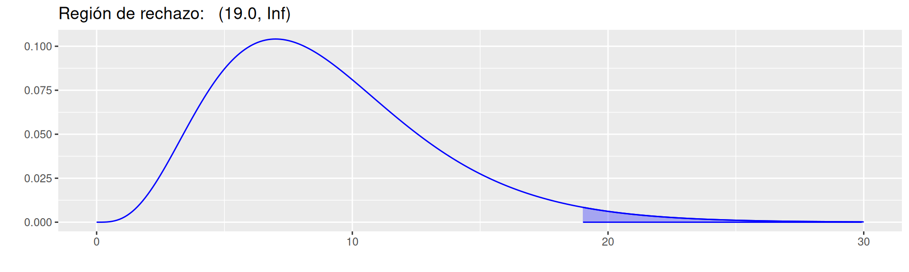

Están conformadas por un arreglo de datos correspondientes a las frecuencias absolutas que resultan al contar las todas las posibles registros que contienen las características (\(a_i,b_j\)) correspondientes a las dos variables que son representadas por \(n_{ij}\)
| \(\bf{B}\) | \(\bf{1}\) | \(\bf{2}\) | \(\bf{3}\) | \(\ldots\) | \(\bf{j}\) | \(\ldots\) | \(\bf{b}\) | ||
|---|---|---|---|---|---|---|---|---|---|
| \(\bf{A}\) | |||||||||
| \(\bf{1}\) | \(n_{11}\) | \(n_{12}\) | \(n_{13}\) | \(\ldots\) | \(n_{1j}\) | \(\ldots\) | \(n_{1b}\) | \(\bf{n_{1.}}\) | |
| \(\bf{2}\) | \(n_{21}\) | \(n_{22}\) | \(n_{23}\) | \(\ldots\) | \(n_{2j}\) | \(\ldots\) | \(n_{2b}\) | \(\bf{n_{2.}}\) | |
| \(\bf{3}\) | \(n_{31}\) | \(n_{32}\) | \(n_{33}\) | \(\ldots\) | \(n_{3j}\) | \(\ldots\) | \(n_{3b}\) | \(\bf{n_{3.}}\) | |
| \(\vdots\) | \(\vdots\) | \(\vdots\) | \(\vdots\) | \(\vdots\) | \(\vdots\) | \(\vdots\) | \(\vdots\) | ||
| \(\bf{i}\) | \(n_{i1}\) | \(n_{i2}\) | \(n_{i3}\) | \(\ldots\) | \(n_{ij}\) | \(\ldots\) | \(n_{ib}\) | \(\bf{n_{i.}}\) | |
| \(\vdots\) | \(\vdots\) | \(\vdots\) | \(\vdots\) | \(\vdots\) | \(\vdots\) | \(\vdots\) | \(\vdots\) | ||
| \(\bf{a}\) | \(n_{a1}\) | \(n_{a2}\) | \(n_{a3}\) | \(\ldots\) | \(n_{aj}\) | \(\ldots\) | \(n_{ab}\) | \(\bf{n_{a.}}\) | |
| \(\bf{n_{.1}}\) | \(\bf{n_{.2}}\) | \(\bf{n_{.3}}\) | \(\ldots\) | \(\bf{n_{.j}}\) | \(\ldots\) | \(\bf{n_{.b}}\) | \(\bf{n}\) |
Los valores \(\bf{n_{i.}}\)
representan el total marginal de la variable \(\bf{A}\), mientras que \(\bf{n_{.j}}\) representa el total por
columnas que corresponden a la variable B. La suma de todos
los valores \(\bf{n_{ij}}\) es \(\bf{n}\)
La función table() en R permite construir
la tabla a partir de la información contenida en una base de datos
(table(data$A, data$B))
Determina si las diferencias entre las frecuencias observadas en una tabla de contingencia y las frecuencias esperadas, suponiendo que las variables son independientes, son estadísticamente significativas. En caso de rechazarse Ho, se concluye que las variables son independientes, en caso contrario se asume que hay una relación entre ellas (dependencia).
Pruebas :
\[H_{o} : \text{la variables A es independiente de la variable B} \hspace{.8cm}\]
\[H_{a} : \text{la variables A es NO independiente de la variable B}\]
Estadístico de prueba:
\[\chi^{2} = \dfrac{\sum (Obs -Esp)^2}{Esp} \sim \chi^{2}_{v:(r-1)(c-1)}\]
Región de rechazo:
# install.packages('ggfortify')
library(ggfortify)
pRdeR=qchisq(c(0.025,0.975),9)
p=ggdistribution(dchisq, seq(0, 30, 0.1), df = 9, colour = 'blue')
p=ggdistribution(dchisq, seq(pRdeR[2], 30, 0.1), df = 9, colour = 'blue', fill="blue", p=p)+
ggtitle("Región de rechazo: (19.0, Inf) ")
p
pRdeR[1] 2.700389 19.022768Para las variables
library(paqueteMODELOS)
data("vivienda")
t_est_zon = table(vivienda$estrato,vivienda$zona)
chisq.test(t_est_zon)
Pearson's Chi-squared test
data: t_est_zon
X-squared = 3830.4, df = 12, p-value < 2.2e-16Los resultados anteriores indican que hay o no relación entre las variables estrato y zona de ubicación de las viviendas en Cali.
Las tablas de contingencia son empleadas en ciencia de datos y el análisis estadístico cuando se trabaja con variables categóricas (cualitativas - escala nominal u ordinal). Estas tablas resumen la distribución conjunta de dos o más variables categóricas, permitiendo analizar patrones, relaciones y asociaciones entre ellas.
Las tablas de contingencia son una parte esencial del análisis exploratorio de datos. Proporcionan una visión rápida y clara de cómo se distribuyen las variables categóricas en conjunto.
Las tablas de contingencia resumen las frecuencias de ocurrencia conjunta de las categorías de dos o más variables. Esto es útil para entender la distribución y proporciones en los datos.
Se utilizan para realizar pruebas de independencia entre dos variables categóricas. Las pruebas de chi-cuadrado son comúnmente aplicadas en este contexto para evaluar si las dos variables son independientes o si hay alguna asociación significativa entre ellas.
Puedes visualizar las asociaciones entre variables categóricas utilizando gráficos como gráficos de barras apiladas, mapas de calor (heatmap) o diagramas de mosaico, que muestran la proporción de observaciones en cada combinación de categorías.
Al dividir la tabla de contingencia en subconjuntos, puedes examinar las relaciones en segmentos específicos de los datos, lo que puede ser útil para entender patrones más detallados.
Las tablas de contingencia también son útiles durante el preprocesamiento de datos, especialmente cuando se trata de manejar valores faltantes o identificar posibles relaciones entre variables antes de aplicar modelos de aprendizaje automático.